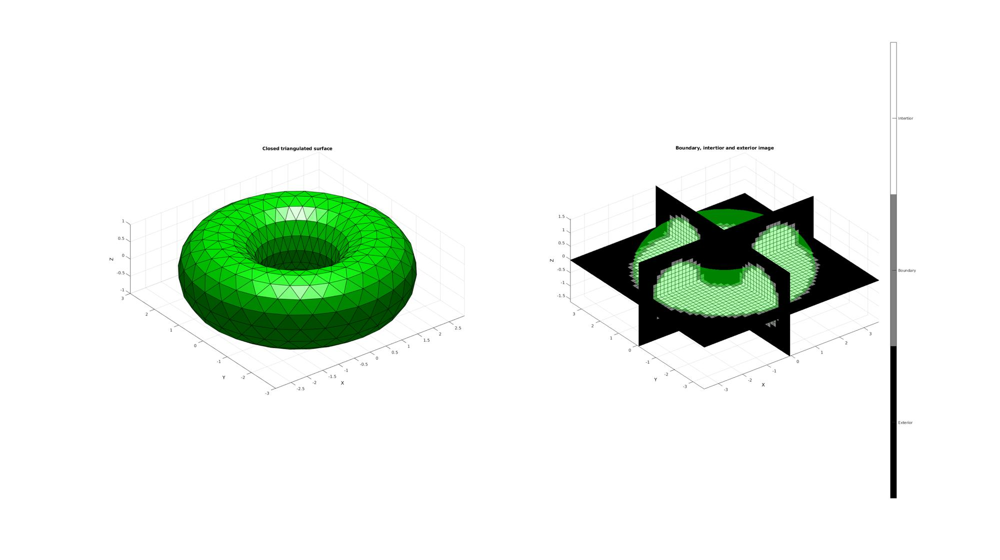
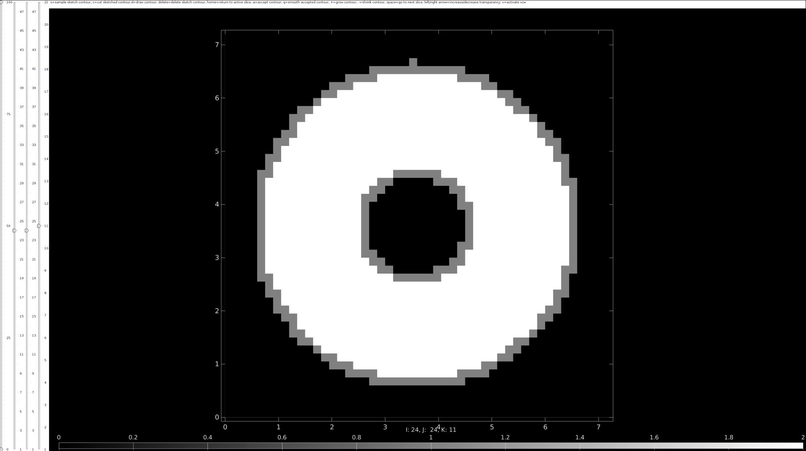
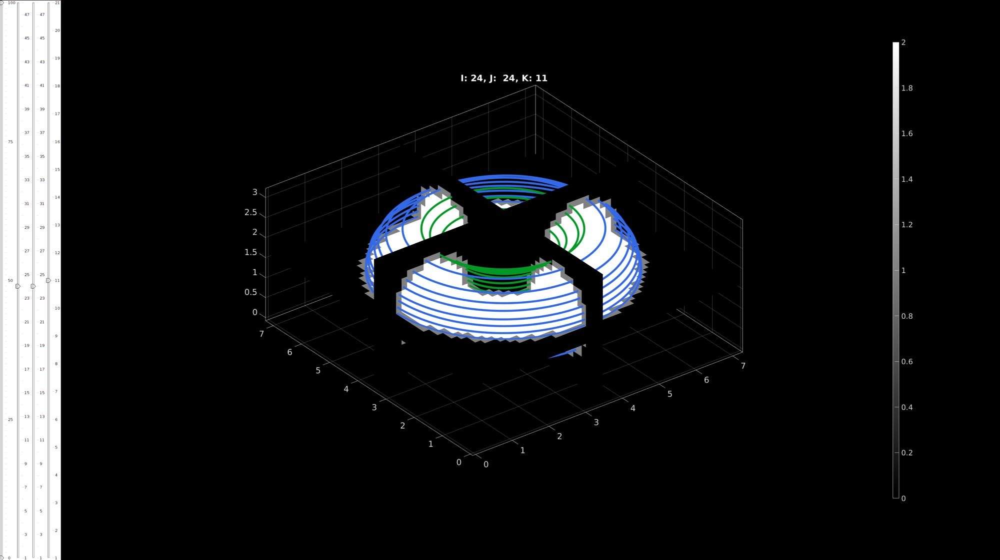
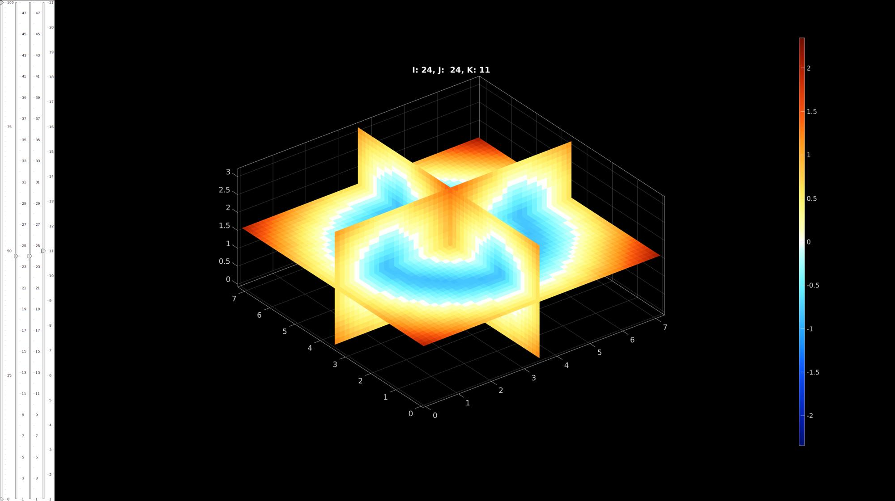
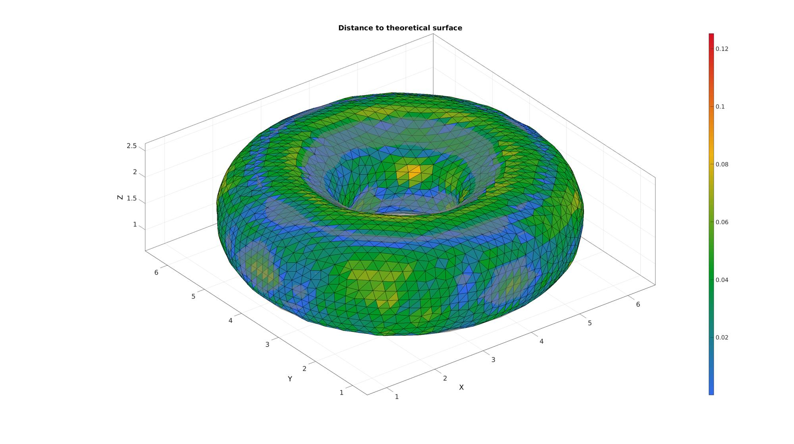

DEMO_imx_levelset_surface_compare
Below is a demonstration for:
- Segmenting contours from 3D image data
- Converting the contour data to a levelset image
- Compute a surface from the levelset image
- Compate the surface to a theoretical surface
Contents
Keywords
- Image segmentation
- Image contours
- imx
- Levelset image
- Surface reconstruction
clear; close all; clc;
Plot settings
fontSize=10; faceAlpha1=1; faceAlpha2=0.3; plotColors=gjet(4);
defaultFolder = fileparts(fileparts(mfilename('fullpath'))); %Set main folder pathName=fullfile(defaultFolder,'data','imseg'); loadNames={'imseg_torus_1','imseg_torus_2'};
Simulate image
Defining an example triangulated surface model
% Defining a deformed and rotated torus shape r=1; %Sphere radius rc=2; %Central radius nr=16; nc=30; ptype='tri'; [F,V]=patchTorus(r,nr,rc,nc,ptype); [THETA,RHO] = cart2pol(V(:,1),V(:,2));
Setting control parameters
% Defining the full set of possible control parameters voxelSize=0.15; % The output image voxel size. imOrigin=min(V,[],1)-4*voxelSize; imMax=max(V,[],1)+4*voxelSize; imSiz=round((imMax-imOrigin)/voxelSize); imSiz=imSiz([2 1 3]); %Image size (x, y corresponds to j,i in image coordinates, hence the permutation) % Using |triSurf2Im| function to convert patch data to image data [M,G,bwLabels]=triSurf2Im(F,V,voxelSize,imOrigin,imSiz); %calucalte coordinate in image system Vt=V-imOrigin(ones(size(V,1),1),:);
Plotting the results
hf1=cFigure; subplot(1,2,1); title('Closed triangulated surface','FontSize',fontSize); xlabel('X','FontSize',fontSize);ylabel('Y','FontSize',fontSize); zlabel('Z','FontSize',fontSize); hold on; patch('Faces',F,'Vertices',V,'FaceColor','g','EdgeColor','k','FaceAlpha',faceAlpha1); camlight('headlight'); lighting flat; axis equal; view(3); axis tight; grid on; set(gca,'FontSize',fontSize); subplot(1,2,2); title('Boundary, intertior and exterior image','FontSize',fontSize); xlabel('X','FontSize',fontSize);ylabel('Y','FontSize',fontSize); zlabel('Z','FontSize',fontSize); hold on; patch('Faces',F,'Vertices',V,'FaceColor','g','EdgeColor','none','FaceAlpha',faceAlpha2); L_plot=false(size(M)); L_plot(:,:,round(size(M,3)/2))=1; [Fm,Vm,Cm]=ind2patch(L_plot,double(M),'sk'); [Vm(:,1),Vm(:,2),Vm(:,3)]=im2cart(Vm(:,2),Vm(:,1),Vm(:,3),voxelSize*ones(1,3)); Vm=Vm+imOrigin(ones(size(Vm,1),1),:); patch('Faces',Fm,'Vertices',Vm,'FaceColor','flat','CData',Cm,'EdgeColor','k','FaceAlpha',faceAlpha1); L_plot=false(size(M));L_plot(round(size(M,1)/2),:,:)=1; [Fm,Vm,Cm]=ind2patch(L_plot,M,'si'); [Vm(:,1),Vm(:,2),Vm(:,3)]=im2cart(Vm(:,2),Vm(:,1),Vm(:,3),voxelSize*ones(1,3)); Vm=Vm+imOrigin(ones(size(Vm,1),1),:); patch('Faces',Fm,'Vertices',Vm,'FaceColor','flat','CData',Cm,'EdgeColor','k','FaceAlpha',faceAlpha1); L_plot=false(size(M));L_plot(:,round(size(M,2)/2),:)=1; [Fm,Vm,Cm]=ind2patch(L_plot,M,'sj'); [Vm(:,1),Vm(:,2),Vm(:,3)]=im2cart(Vm(:,2),Vm(:,1),Vm(:,3),voxelSize*ones(1,3)); Vm=Vm+imOrigin(ones(size(Vm,1),1),:); patch('Faces',Fm,'Vertices',Vm,'FaceColor','flat','CData',Cm,'EdgeColor','k','FaceAlpha',faceAlpha1); colormap(gray(3)); caxis([0 2]); hc=colorbar; set(hc,'YTick',[1/3 1 5/3]); set(hc,'YTickLabel',{'Exterior','Boundary','Intertior'}); axis equal; view(3); axis tight; grid on; set(gca,'FontSize',fontSize); drawnow;
Start contour selection using imx
Use imx to draw contours for tissue boundaries of interest.
v=voxelSize*ones(1,3); %Voxel size hf=imx(M,v); %Start image contour analysis drawnow;
Upload previously completed contours
You can upload complete contours by using the load button. Try to load in imseg_torus_1.mat or imseg_torus_2.mat from...GIBBON/data/imseg/
Example converting completed contours into levelset function
The surface should exist at the level 0
% Start simple slice viewer sv3(M,v); drawnow; numContours=numel(loadNames); numSlices=size(M,3); levelSetType=3; logicIn=repmat(M,1,1,1,2); logicOn=repmat(M,1,1,1,2); for q=1:1:2 loadName=fullfile(pathName,loadNames{q}); load(loadName); Vcs=saveStruct.ContourSet; [L_in,L_on]=contour2logic(M,v,Vcs); logicIn(:,:,:,q)=L_in; logicOn(:,:,:,q)=L_on; for qSlice=1:1:numSlices numSubContours=numel(Vcs{qSlice}); for qSub=1:1:numSubContours Vd=Vcs{qSlice}{qSub}; %Current contour if ~isempty(Vd) hp=plotV(Vd,'w-'); hp.Color=plotColors(q,:); hp.LineWidth=5; end end end end logicInside=(logicIn(:,:,:,1) | logicOn(:,:,:,1)) & ~logicIn(:,:,:,2); [K]=logic2levelset(logicInside,v);
Visualize levelset
vizStruct.colormap=warmcold(250); %colormap vizStruct.clim=[-max(abs(K(:))) max(abs(K(:)))]; %color limits hf1q=sv3(K,v,vizStruct);
Convert levelset function to a surface
controlPar.contourLevel=0;
controlPar.voxelSize=v;
controlPar.nSub=[1 1 1];
controlPar.capOpt=1;
[Fi,Vi]=levelset2isosurface(K,controlPar);
Fi=fliplr(Fi); %Invert orientation
Surface improvement and smoothing
%Remove tri-connected parts [Fi,Vi]=triSurfRemoveThreeConnect(Fi,Vi,[]); %Smoothen cParSmooth.Method='HC'; cParSmooth.Alpha=0.1; cParSmooth.Beta=0.5; cParSmooth.n=10; [Vi]=patchSmooth(Fi,Vi,[],cParSmooth);
Compare to theoretical original
Compare by computing distance with ray-tracing method.
[Di]=triSurfSetDist(Fi,Vi,F,Vt,'dist-ray');
Visualize distance measure
cFigure; title('Distance to theoretical surface'); hold on; gpatch(F,Vt,0.5*ones(1,3),'none',0.5); hp=gpatch(Fi,Vi,Di,'k',1); caxis([min(Di(:)) max(Di(:))]); colormap(gjet(250)); colorbar; axisGeom; drawnow
GIBBON footer text
License: https://github.com/gibbonCode/GIBBON/blob/master/LICENSE
GIBBON: The Geometry and Image-based Bioengineering add-On. A toolbox for image segmentation, image-based modeling, meshing, and finite element analysis.
Copyright (C) 2019 Kevin Mattheus Moerman
This program is free software: you can redistribute it and/or modify it under the terms of the GNU General Public License as published by the Free Software Foundation, either version 3 of the License, or (at your option) any later version.
This program is distributed in the hope that it will be useful, but WITHOUT ANY WARRANTY; without even the implied warranty of MERCHANTABILITY or FITNESS FOR A PARTICULAR PURPOSE. See the GNU General Public License for more details.
You should have received a copy of the GNU General Public License along with this program. If not, see http://www.gnu.org/licenses/.